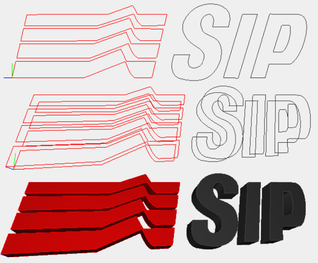
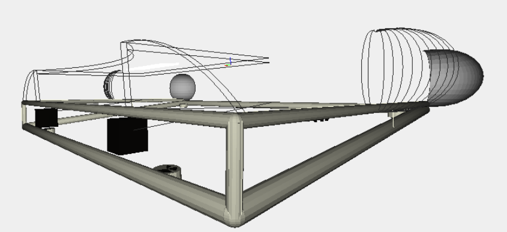
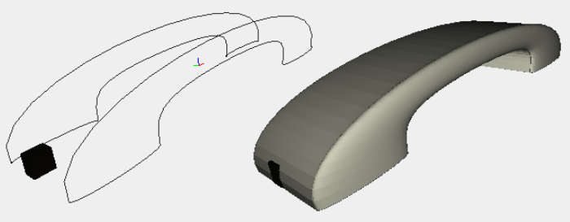

Sirio
The Original

Sirio phone is a piece in telecommunications history. Originally, it was a key-phone realized by SIP – Società Italiana per l’Esercizio Telefonico- around 1990-1991. The design first version was requested in 1987 to Giugiaro Design, which realized a telephone set with simple lines but at the same time elegant, that met the Company’s needs for production on a large scale. The name ‘Sirio’ was then extended to other SIP and Telecom Italia devices, which are equipped with new functions and designs.
The Model

The model of the table is composed by five parts:
- Brand
- Numbers
- Keyboard
- Chassis
- Handset
The Brand
The brand has been obtained by the application of Hermite for the profile curves constructed with Bezier.
The Numbers
For the modeling of some numbers was used Bezier function (such as the number 8):
For the asterisk key has been used the function 'REPLICA' in conjunction with the function 'ROTATE' getting the result below:
/* Crea il tasto asterico */
var asterisco = function(h) {
var line1 = TRANSLATE([0,2])([-1.114/2,h+0.01])(linea(0.195,1.114));
var aste = COLOR(grigio10)(STRUCT(REPLICA(3)([line1,ROTATE([0,1])(2*PI/3)])));
var tot = STRUCT([aste]);
return tot;
}The Keyboard
The keyboard has been created through the 'console' that takes three inputs:
- h - height of the buttons,
- a - latitudinal distance between the buttons,
- b - longitudinal distance between the buttons.
var console = function(h,a,b) {
var un = TRANSLATE([0,1])([-h-a,h/2+b/2+h+b])(ROTATE([0,1])(-PI/2)(uno(h)));
var du = TRANSLATE([1])([h/2+b/2+h+b])(due(h));
var tr = TRANSLATE([0,1])([h+a,h/2+b/2+h+b])(tre(h));
var quatt = TRANSLATE([0,1])([-h-a,h/2+b/2])(quattro(h));
var cin = TRANSLATE([1])([h/2+b/2])(cinque(h));
var se = TRANSLATE([0,1])([h+a,h/2+b/2])(sei(h));
var sett = TRANSLATE([0,1])([-h-a,-h/2-b/2])(sette(h));
var ott = TRANSLATE([1])([-h/2-b/2])(otto(h));
var nov = TRANSLATE([0,1])([h+a,-h/2-b/2])(nove(h));
var zer = TRANSLATE([1])([-h/2-b/2-h-b])(zero(h));
var ast = TRANSLATE([0,1])([-h-a,-h/2-b/2-h-b])(asterisco(h));
var canc = TRANSLATE([0,1])([h+a,-h/2-b/2-h-b])(cancelletto(h));
var tast_spec_rp = TRANSLATE([0,1])([h+a+8,-h/2-b/2])(rp(h));
var tast_spec_p = TRANSLATE([0,1])([h+a+8,-h/2-b/2-h-b])(pii_but(h));
var logo = TRANSLATE([0,1,2])([-14,h/2+b/2+b+h/2,0.9])(SCALE([0,1])([0.25,0.25])(logo_sip(0.5)));
var tastiera = TRANSLATE([2])([-0.2])(STRUCT([cin,ott,du,zer,un,tr,quatt,se,sett,nov,ast,canc,tast_spec_rp,tast_spec_p]));
var tot = STRUCT([tastiera])
return tot;
}The Chassis
The Chassis has been obtained by the application of:
- 1-Hermite for the profile curves constructed with Bezier;
- 2-Rods obtained by extruding circles;
- 3-Spheres, hemispheres or quarter-sphere;
- 3-CuboId.
var sphere = function(r) {
var domain = DOMAIN([[0, PI], [0, 2*PI]])([16,16]);
var mapping = function(v) {
var a = v[0];
var b = v[1];
var u = r*SIN(a)*COS(b);
var v = r*SIN(a)*SIN(b);
var w = r*COS(a);
return [u,v,w];
}
return MAP(mapping)(domain)
}The Handset
The handset has been obtained by the application of Hermite for the profile curves constructed with Bezier.
